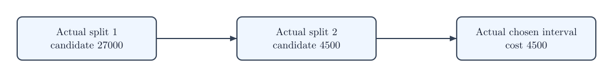
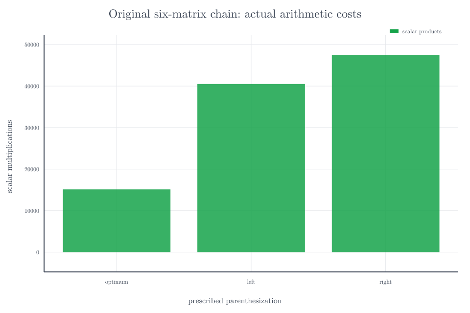
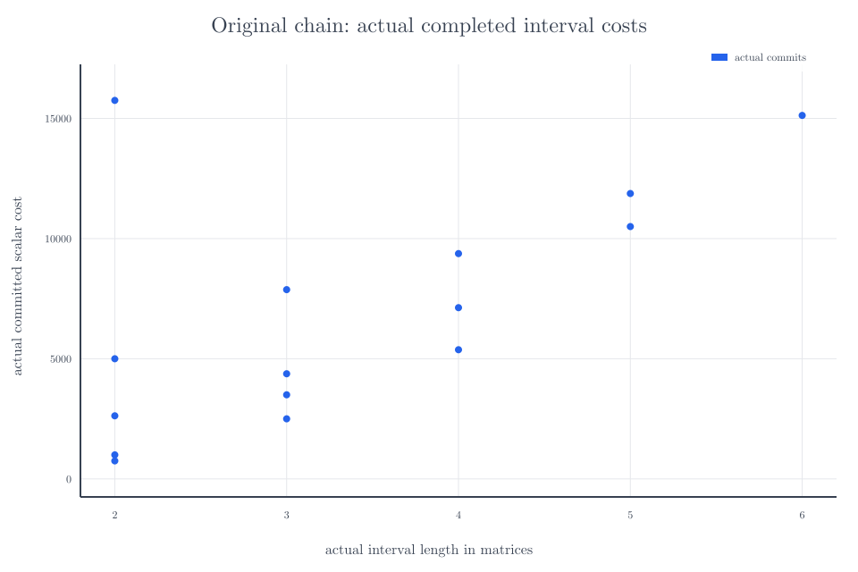
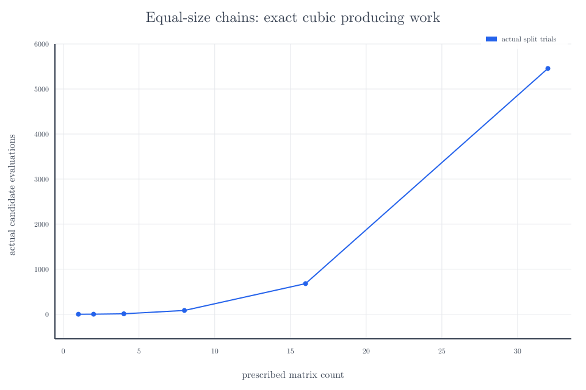

Matrix-chain ordering
Abstract
Multiplying compatible matrices in different orders can change the number of scalar multiplications while producing the same mathematical product. We choose a minimum-cost binary parenthesization, show actual interval decisions on three matrices, retain the original six-matrix example, and distinguish arithmetic planning from matrix execution. Positive dimensions and explicit overflow handling make the cost model checkable.
Derive the interval recurrence
Matrix Ai has dimensions d[i−1] by d[i]. A final split k of the interval i..j first forms i..k and k+1..j, then multiplies a d[i−1]-by-d[k] matrix by a d[k]-by-d[j] matrix. The last product costs d[i−1]*d[k]*d[j] scalar multiplications under the conventional dense arithmetic model. Addition counts, sparsity, hardware packing and numerical roundoff are outside this objective.
Every binary parenthesization has exactly one final split. Replacing either child by a cheaper child cannot increase its dimensions, so optimal children give an optimal parent. Induction on interval length proves the recurrence. Fill shorter intervals first; examine starts and splits in increasing order. A strict improvement rule preserves the first minimizing split, including equal-cost ties. This rule chooses one optimum rather than enumerating all optima.
Three matrices: read the actual decisions
For dimensions10,30,5,60, multiplying A1A2 first costs1500, then3000, giving4500. Multiplying A2A3 first costs9000, then18000, giving27000. The diagram below reads the actual final-interval trial records, so its alternatives come from the producer rather than a reconstructed illustration.
#include <dm/dm.hpp>
int main() {
std::filesystem::create_directories("build");
auto t = dm::algorithms::matrix_chain_trace({10, 30, 5, 60});
std::print("| actual i | actual j | actual split | left cost | right cost | final product | candidate " "cost | selected |\n| ---: | ---: | ---: | ---: | ---: | ---: | ---: | --- |\n");
for (auto &r : t.trials)
std::print("| {} | {} | {} | {} | {} | {} | {} | {} |\n", r.i, r.j, r.k,
r.left, r.right, r.product, r.cost, r.selected);
auto &a = t.trials[2];
auto &b = t.trials[3];
dm::graphics::Diagram d;
d.node("a", {0, 0},
std::format("Actual split {}\ncandidate {}", a.k, a.cost)).node(
"b", {6, 0}, std::format("Actual split {}\ncandidate {}", b.k, b.cost)).node("c", {12, 0}, std::format("Actual chosen interval\ncost {}", t.analysis.result.cost)).edge("a", "b").edge("b", "c");
d.save_svg("build/matrix_chain_tiny.svg");
}| actual i | actual j | actual split | left cost | right cost | final product | candidate cost | selected |
|---|---|---|---|---|---|---|---|
| 1 | 2 | 1 | 0 | 0 | 1500 | 1500 | true |
| 2 | 3 | 2 | 0 | 0 | 9000 | 9000 | true |
| 1 | 3 | 1 | 0 | 9000 | 18000 | 27000 | true |
| 1 | 3 | 2 | 1500 | 0 | 3000 | 4500 | true |

Retain the original six matrices
The original CLRS dimensions are30,35,15,5,10,20,25. The native API returns the exact integer optimum and reconstructs its actual selected split tree with an explicit stack. The two association helpers evaluate their own prescribed orders under the same checked arithmetic contract; they are comparators, not competing heuristics. The plotted costs have the same units.
#include <dm/dm.hpp>
int main() {
std::filesystem::create_directories("build");
auto dims = dm::algorithms::matrix_chain_demo_dimensions();
auto a = dm::algorithms::matrix_chain_analyze(dims);
auto left =
dm::algorithms::matrix_chain_left_cost(dims), right =
dm::algorithms::matrix_chain_right_cost(dims);
std::print("Actual optimal expression: `{}`.\n\n| prescribed order | actual scalar multiplications |\n| " "--- | ---: |\n| optimum | {} |\n| left associated | {} |\n| right associated | {} |\n",
a.result.parenthesization, a.result.cost, left, right);
auto p =
dm::graphics::RPlot::barplot({double(a.result.cost), double(left),
double(right)},
{"optimum", "left", "right"},
"scalar products");
p.x_label("prescribed parenthesization").y_label("scalar multiplications").title("Original six-matrix chain: actual arithmetic costs").save_svg("build/matrix_chain_original.svg");
}Actual optimal expression: ((A1(A2A3))((A4A5)A6)).
| prescribed order | actual scalar multiplications |
|---|---|
| optimum | 15125 |
| left associated | 40500 |
| right associated | 47500 |

Committed subproblems and safe arithmetic
The complete cost and split tables are one-based and filled only above the diagonal. The next figure groups actual committed interval costs by interval length; it does not claim costs are monotone for arbitrary dimensions. Each plotted point comes from a real completed cell after every candidate was considered.
Dimensions must be positive, including supplied dimensions of an empty chain. Zero or one dimension denotes no matrices; two dimensions denote one matrix with zero multiplication cost. Complete table and iteration geometry is checked before allocation. Costs greater than LLONG_MAX saturate at LLONG_MAX+1 in the internal/returned table, explicitly represented by an unsigned integer sentinel. Nonnegative products and sums make saturation order-preserving below this threshold.
Crucially, an overflowing subproblem need not occur in the chosen full tree. The planner therefore rejects only an overflowing optimal full-chain cost. It can still return a representable complete optimum while unused subintervals are saturated. The ordinary signed result never silently wraps. This differs from the legacy unchecked signed arithmetic, and invalid nonpositive dimensions now throw before evaluation.
#include <dm/dm.hpp>
int main() {
std::filesystem::create_directories("build");
auto t =
dm::algorithms::matrix_chain_trace(dm::algorithms::matrix_chain_demo_dimensions());
std::vector<double> x, y;
std::print("| actual first matrix | actual last matrix | committed split | committed scalar cost |\n| " "---: | ---: | ---: | ---: |\n");
for (auto &r : t.commits) {
x.push_back(r.j - r.i + 1);
y.push_back(r.cost);
std::print("| {} | {} | {} | {} |\n", r.i, r.j, r.split, r.cost);
}
auto p = dm::graphics::RPlot::create();
p.points(x, y, "actual commits");
p.x_label("actual interval length in matrices").y_label(
"actual committed scalar cost").title("Original chain: actual completed interval costs").save_svg("build/matrix_chain_cells.svg");
}| actual first matrix | actual last matrix | committed split | committed scalar cost |
|---|---|---|---|
| 1 | 2 | 1 | 15750 |
| 2 | 3 | 2 | 2625 |
| 3 | 4 | 3 | 750 |
| 4 | 5 | 4 | 1000 |
| 5 | 6 | 5 | 5000 |
| 1 | 3 | 1 | 7875 |
| 2 | 4 | 3 | 4375 |
| 3 | 5 | 3 | 2500 |
| 4 | 6 | 5 | 3500 |
| 1 | 4 | 3 | 9375 |
| 2 | 5 | 3 | 7125 |
| 3 | 6 | 3 | 5375 |
| 1 | 5 | 3 | 11875 |
| 2 | 6 | 3 | 10500 |
| 1 | 6 | 3 | 15125 |

Exact work and capture
For n matrices, there are n(n−1)/2 nontrivial intervals and n(n−1)(n+1)/6 candidate splits. These are exact loop counts on every input of that length, giving cubic arithmetic planning time and quadratic table storage. Positive dimensions do not make the search exponential: the Catalan number counts full trees, while DP reuses intervals. The explicit reconstruction stack avoids recursion depth failure; character work is linear in the returned expression length.
Optional complete trace storage is cubic. Its logical quota counts supplied dimension scalars, both complete (n+1)-square tables, every actual trial and every actual commit. Default limit is one million entries; zero disables the optional cap. Record fields, row headers, capacities, expression bytes and runtime storage are excluded. Admission checks the complete known loop geometry before copying or allocation. Quotas are neither byte limits nor wall-clock guarantees.
For equal dimensions10, every full parenthesization costs1000(n−1). The final experiment compares actual counts with the closed forms while keeping the integer cost interpretation explicit.
#include <dm/dm.hpp>
int main() {
std::filesystem::create_directories("build");
std::vector<double> x, y;
std::print("| matrices n | actual trials | exact cubic formula | actual committed cells | actual " "optimum | equal-dimension formula |\n| ---: | ---: | ---: | ---: | ---: | ---: |\n");
for (std::size_t n : {1, 2, 4, 8, 16, 32}) {
auto a =
dm::algorithms::matrix_chain_analyze(std::vector<int>(n + 1, 10));
x.push_back(n);
y.push_back(a.work.trials);
std::print("| {} | {} | {} | {} | {} | {} |\n", n, a.work.trials,
n * (n - 1) * (n + 1) / 6, a.work.cells, a.result.cost,
1000 * (n - 1));
}
auto p = dm::graphics::RPlot::create();
p.line(x, y, "actual split trials", {37, 99, 235});
p.points(x, y, "", {37, 99, 235});
p.legend({"actual split trials"}, {{37, 99, 235}});
p.x_label("prescribed matrix count").y_label("actual candidate evaluations").title("Equal-size chains: exact cubic producing work").save_svg("build/matrix_chain_work.svg");
}| matrices n | actual trials | exact cubic formula | actual committed cells | actual optimum | equal-dimension formula |
|---|---|---|---|---|---|
| 1 | 0 | 0 | 0 | 0 | 0 |
| 2 | 1 | 1 | 1 | 1000 | 1000 |
| 4 | 10 | 10 | 6 | 3000 | 3000 |
| 8 | 84 | 84 | 28 | 7000 | 7000 |
| 16 | 680 | 680 | 120 | 15000 | 15000 |
| 32 | 5456 | 5456 | 496 | 31000 | 31000 |

Verification and references
Native tests enumerate every dimension sequence in1..3 through six matrices,
independently enumerate full binary parenthesizations, and inspect every actual
trial, commit, strict tie, table entry and quota. Original15125/40500/47500
costs, empty/one-matrix cases, nonpositive dimensions, ownership and
unrepresentable full costs are retained. A deliberately overflowing unused
subchain with a representable full optimum checks saturation semantics. Existing
combinatorial-search regressions remain. The shared ten-report batch passes 71
CTest cases, 29 directly instrumented ASan/UBSan cases, 130 compiled and
executed public examples, 598/598 scoped documentation definitions and ten
representative hovers. Independent Python arbitrary-precision, hashlib,
sorted-window, RNG, polynomial, graph and full-assignment references verify
224,229 actual records. Frozen comparisons preserve ordinary legacy outputs,
including selected clique identities, original density graphs and memetic
partitions. Twelve checkout headers and twelve identically installed headers
compile independently; an installed-header native consumer links and runs. All
four complete programs and all four native figures pass execution and visual
review, and HTML/Markdown exports preserve computed results and identical image
bytes. Receipts: build/mepml-conversion/batch-224-233/.
The recurrence is the standard matrix-chain ordering example in Cormen, Leiserson, Rivest and Stein, Introduction to Algorithms. MIT Press book page identifies the source. This module plans the conventional dense scalar-product objective; it does not execute, benchmark or guarantee floating-point accuracy of the selected matrix product.